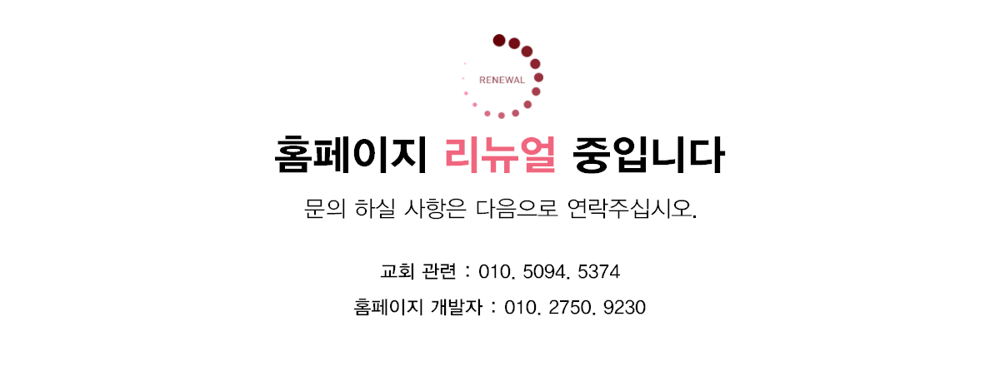

- 
-

서울예수사랑교회
는 대한예수교장로회(백석) 서울중앙노회
소속
입니다
SEOUL JESUS LOVE CHURCH
"오직 성령이 너희에게 임하시면 너희가 권능을 받고 예루살렘과 온 유대와
사마리아와 땅 끝까지 이르러 내 증인이 되리라 하시니라"
[사도행전 1:8]
사마리아와 땅 끝까지 이르러 내 증인이 되리라 하시니라"
[사도행전 1:8]
이 말씀을 중심으로
그리스도의 한 몸으로 연합되어진 교회 중에
(NK에서 이스라엘까지) 서진을 향해
한 걸음 한 걸음 나아가는 교회입니다.
서울예수사랑교회는 지역 사회 속에서
빛과 소금의 사명을 감당하고 (마 5:13-14)
상처입고 고통당하는 이웃과 친구 되어 (눅 10:30-37)
그들과 함께 하고 예수 그리스도의 사랑과 손길을 전하는 교회입니다.
그리스도의 한 몸으로 연합되어진 교회 중에
(NK에서 이스라엘까지) 서진을 향해
한 걸음 한 걸음 나아가는 교회입니다.
서울예수사랑교회는 지역 사회 속에서
빛과 소금의 사명을 감당하고 (마 5:13-14)
상처입고 고통당하는 이웃과 친구 되어 (눅 10:30-37)
그들과 함께 하고 예수 그리스도의 사랑과 손길을 전하는 교회입니다.
display
promotion